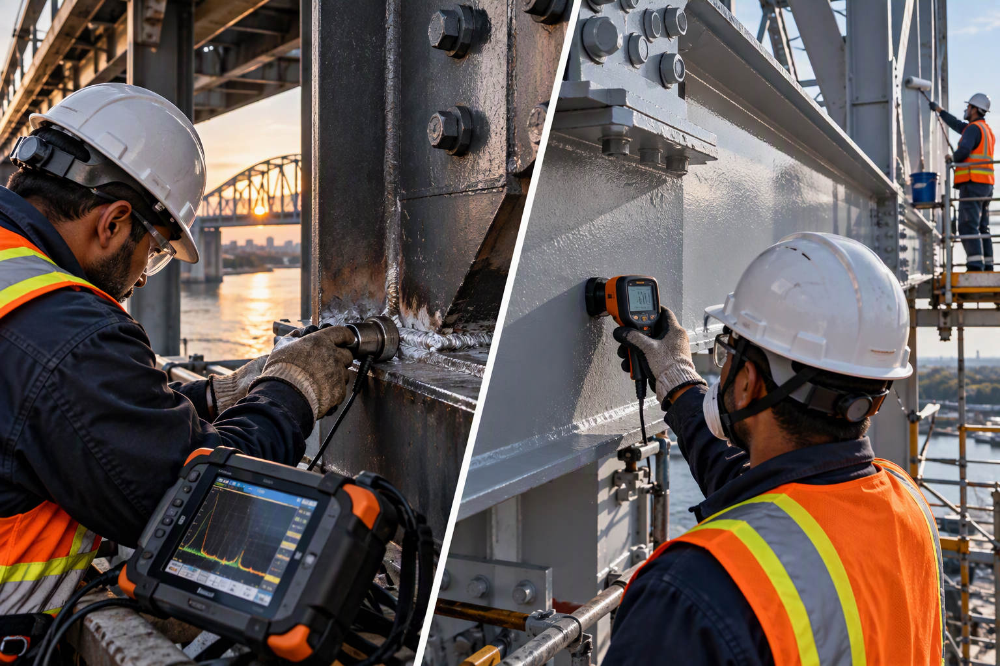

Built for construction.
Driven by quality.
Backed by engineering.
VertexPM delivers construction management, quality management, quality assurance and building permit support across Southern Ontario.
Project support that keeps construction moving.

Construction Management
Coordination, reporting, documentation and delivery support.
Quality Management
CQMPs, ITPs, inspections, NCRs and records.
Building Permit Support
Permit coordination with Professional Engineer support.
Closeout & Turnover
Complete, traceable and organized project records.
Practical support. Clear accountability. Quality from start to finish.
VertexPM Inc. is a Burlington-based construction management, quality and engineering-support company serving Southern Ontario. We support contractors, municipalities, project owners, developers and project teams through project planning, permitting, construction, inspection, testing, documentation and final turnover. VertexPM operates under a PEO Certificate of Authorization.
Our Mission
Our mission is to provide reliable construction management, quality assurance, quality control and engineering support that helps our clients deliver projects in accordance with project requirements. From planning and inspections through testing, documentation and final closeout, we focus on practical solutions, clear accountability and getting the work done right.
Our Vision
Our vision is to build VertexPM into a trusted construction and quality partner across Southern Ontario, known for dependable technical support, strong quality oversight and properly delivered projects. We want to be the team contractors, municipalities, owners and developers can rely on when quality matters.
Clear services. Defined outcomes.
Construction Management
Project coordination, reporting, RFI support, action tracking, document control and construction-phase delivery support.
Quality Management
CQMPs, ITPs, checklists, audits, NCRs, deficiencies, red-line drawings, as-built records and quality closeout.
Building Permit Support
Permit drawings, design coordination, Professional Engineer review, submission support and responses to municipal comments.
Inspection, testing and compliance support.
VertexPM helps project teams plan, coordinate, review and track the evidence needed to demonstrate that construction requirements have been met.
Inspection Coordination
Inspection planning, hold and witness point tracking, inspection records and deficiency follow-up.
Testing Coordination
Testing requirements, laboratory coordination, report tracking, result review and outstanding report follow-up.
Records & Compliance
Quality CoC review, material documentation, compliance tracking, red-line drawings and as-built record control.
Independent quality oversight for municipalities and project owners.
VertexPM supports Cities, public agencies and owners in verifying that specified quality requirements are addressed and that the completed work is supported by clear, traceable quality records.
Owner / Agency QA Oversight
- Quality plan and ITP review
- Contractor QA/QC review
- Inspection and testing oversight
- NCR and deficiency monitoring
Acceptance & Turnover Review
- Test and inspection record review
- Quality CoC review
- As-built and red-line verification
- Final quality package review

Welding and protective coating inspection.
Focused inspection support for steel structures, rehabilitation work and other project-specific requirements.
- Welding inspection
- Weld documentation review
- Visual inspection records
- Protective coating inspection
- Surface preparation checks
- Coating application monitoring
- Dry film thickness checks
- Inspection reporting
From requirement to completion. Nothing disconnected.
DEFINE
Confirm scope, requirements, responsibilities and deliverables.
PLAN
Set the quality, permit, inspection and documentation strategy.
EXECUTE
Coordinate construction, inspections, testing and reporting.
CONTROL
Track reports, CoCs, red-lines, NCRs and deficiencies.
CLOSE
Complete as-builts, reconcile records and deliver turnover.
Complete records. Clear status. Controlled turnover.
Documentation Gap Review
Identify missing inspection, testing, material and compliance records before turnover.
Issue Closure
Track NCRs, deficiencies, outstanding reports and unresolved quality documentation.
Final Packages
Reconcile red-lines and as-builts, prepare indexes and organize project turnover packages.
Transportation & Transit
Roads, bridges, transit and transportation construction.
Municipal Infrastructure
Civil, utilities, drainage and public infrastructure.
Buildings
Residential, commercial and institutional projects.
Structural & Concrete
Quality, inspection and technical coordination.
Rehabilitation & Renewal
Repair, retrofit and infrastructure renewal.
Permit Projects
Engineering and building permit support.
Build quality. Build your career.
VertexPM is interested in connecting with construction and quality professionals who value practical project delivery, strong documentation and attention to detail.
Practical delivery. Professional accountability.
Construction-minded
Support built around actual project conditions.
Quality-driven
Requirements stay connected to verification records.
Engineering-backed
Professional practice through a PEO Certificate of Authorization.
Closeout-focused
Documentation is complete and ready for turnover.
Tell us what your project needs.
Request support for a new project, active construction, municipal quality assurance, a building permit requirement, specialized inspection or project closeout.
- Construction management
- Quality management
- Owner / municipal quality assurance
- Inspection and testing coordination
- Welding inspection
- Protective coating inspection
- Building permit support
- Red-line and as-built services
- Closeout and turnover
Request Project Support
Project support that keeps things moving.
Practical solutions. Clear accountability. Quality from start to finish.
Construction Management
Project coordination, reporting, RFI support, action tracking and document control.
Quality Management
CQMPs, ITPs, checklists, audits, NCRs, deficiencies and quality closeout.
Building Permit Support
Permit drawings, design coordination, Professional Engineer review and municipal comments.
Closeout & Turnover
Record reconciliation, issue closure and complete turnover packages.